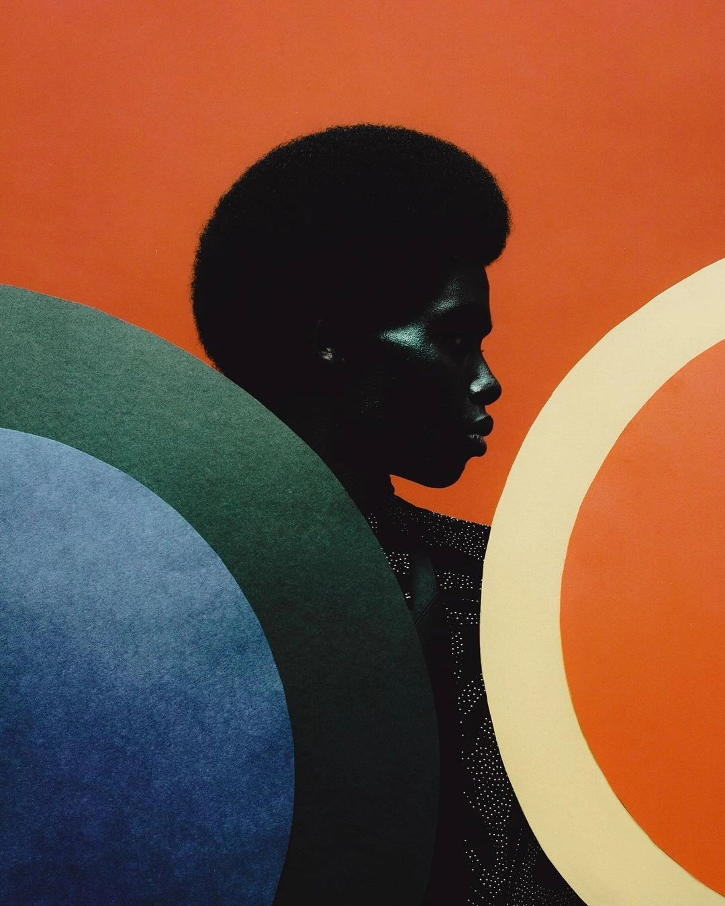

Jazz Music: A Timeless Journey Through Sound
What is Jazz?
Jazz is a music genre that defies easy categorization, known for its improvisational
spirit and deep emotional resonance. It originated in the early 20th century, primarily within African-American communities in
the United States, blending a wide range of influences, from the blues and spirituals to European classical music and military band
traditions. At its core, jazz is about freedom of expression, with musicians often improvising in real-time to create a dynamic and
personal connection with their audience. This interplay of structure and spontaneity gives jazz its unique ability to feel both timeless
and fresh, making it a genre that continues to captivate listeners around the world.
A Brief History of Jazz
The story of jazz begins in New Orleans, a vibrant cultural melting pot where African,
Caribbean, and European musical traditions intersected. In the late 19th and early 20th centuries, the city’s streets, dance halls,
and social clubs were alive with sounds that would eventually give birth to jazz. Early jazz was heavily influenced by the blues,
with its emotive melodies and storytelling, and ragtime, which brought syncopated rhythms and energetic piano rolls into the mix.
The 1920s, often called the Jazz Age, marked a turning point when jazz swept across America, symbolizing the spirit of the Roaring
Twenties. Artists like Louis Armstrong and Duke Ellington became cultural icons, elevating jazz from local entertainment to a
nationwide phenomenon. By the 1930s, the Swing Era took over, with big bands like those led by Count Basie and Benny Goodman
dominating the dance halls. Swing’s infectious rhythms and orchestrated arrangements made jazz accessible to larger audiences.